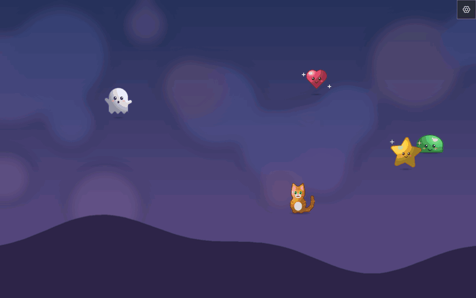
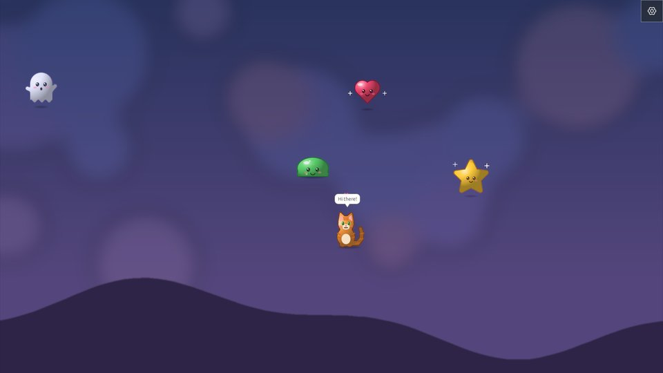
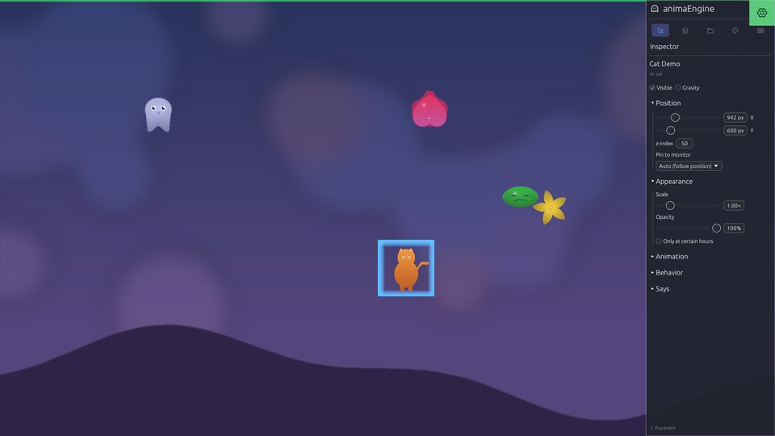
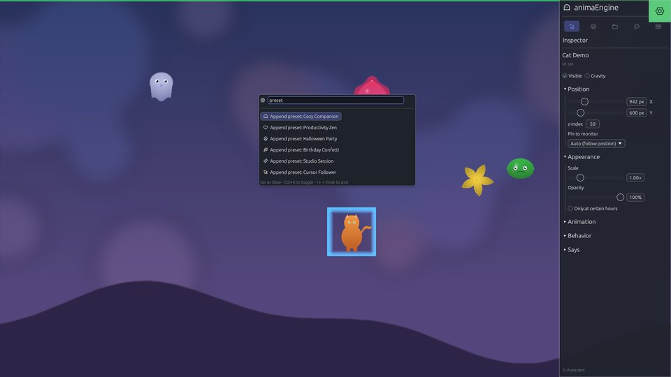
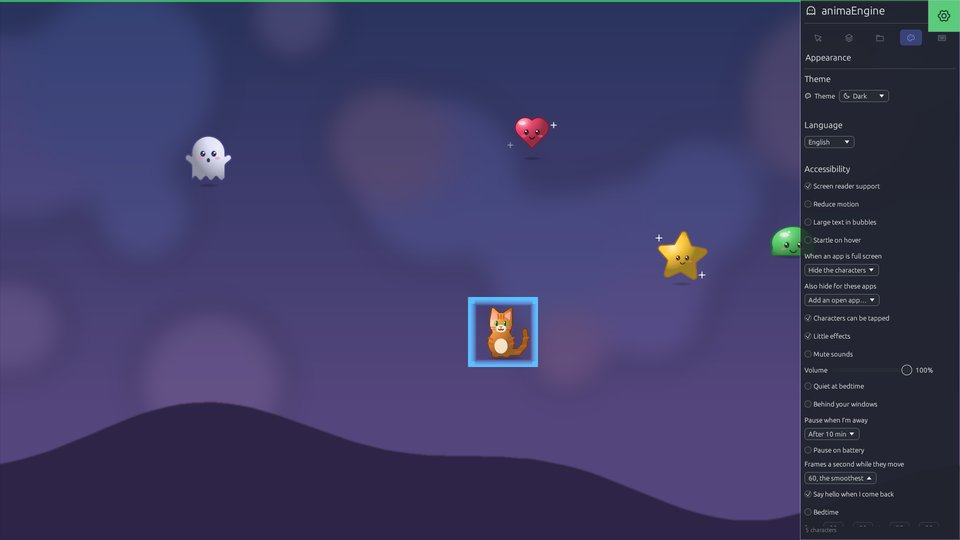

Personaggi animati che vivono sul tuo desktop
Camminano, rimbalzano, si seguono e giocano ad acchiapparella sopra le tue finestre — o sotto. Toccane uno e ti saluta. I clic passano dritti al tuo lavoro.

Cosa fa
Ogni immagine prende vita
Trascina sullo schermo un PNG, una GIF, un WebP o un breve MP4, oppure incolla un’immagine: diventa un personaggio.
Una vita tutta loro
Camminare, vagare, rimbalzare, seguire il cursore o gli altri, giocare ad acchiapparella — o un piccolo script scritto da te.
Lungo la tua giornata
Promemoria per una pausa o per bere acqua, un timer di concentrazione, l’ora della nanna e un «bentornato» quando torni.
Mai d’intralcio
I clic passano attraverso. Si fanno da parte per giochi e film a schermo intero, e restano fermi mentre sei via.
Scene da condividere
Salva ciò che c’è sullo schermo con un nome, cambia a seconda dell’ora e condividi una scena o un personaggio in un solo file.
Leggero
Quasi nessun uso della CPU quando niente si muove, trenta fotogrammi al secondo se vuoi, e su un portatile Linux la GPU NVIDIA resta addormentata.
Per tutti
Dieci lingue, lettori di schermo, ogni azione dalla tastiera, temi ad alto contrasto.
Riservato per natura
Non fa alcuna connessione di rete. Niente su di te o sul tuo desktop esce dal tuo computer.
Uno sguardo








Scarica
| Linux | Un .deb per Ubuntu e Debian, un AppImage per qualsiasi distribuzione, un Flatpak e l’AUR. Ultima versione · note di installazione |
|---|---|
| Windows | Un programma di installazione che non chiede diritti di amministratore, o uno ZIP portatile — novità della 1.5. Ultima versione |
| Sorgente | Rust, licenza MIT. github.com/Alexandru2984/animaEngine |
Ogni versione elenca lo SHA-256 dei suoi file, e GitHub attesta dove ognuno è stato compilato. Windows può avvisare prima di eseguire il programma di installazione finché non è firmato; le FAQ spiegano cosa fare.